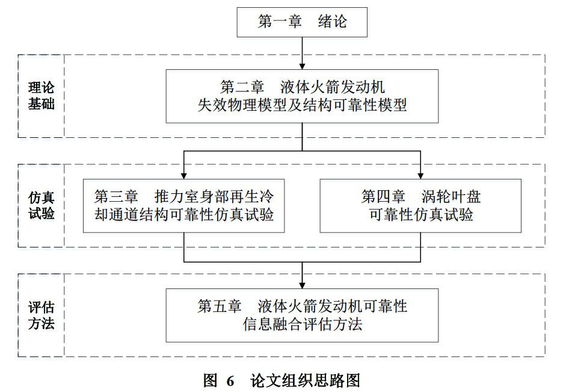
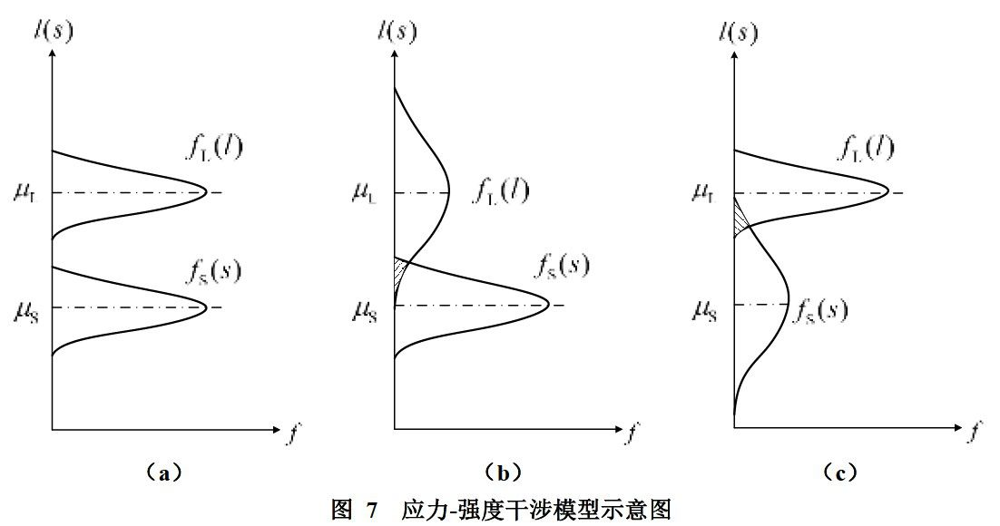
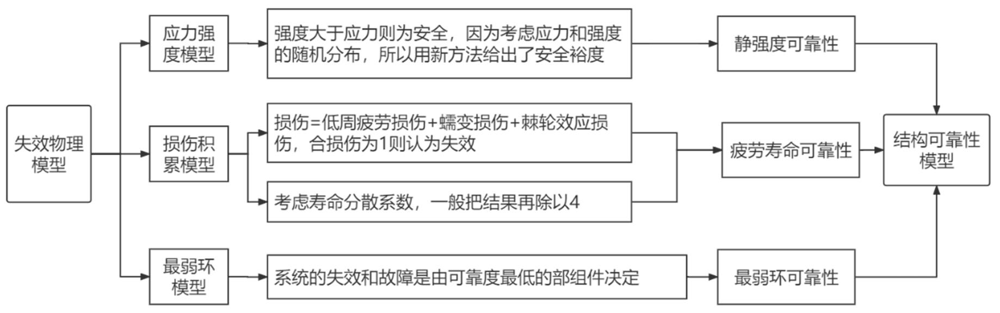
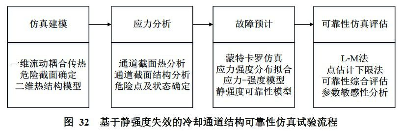
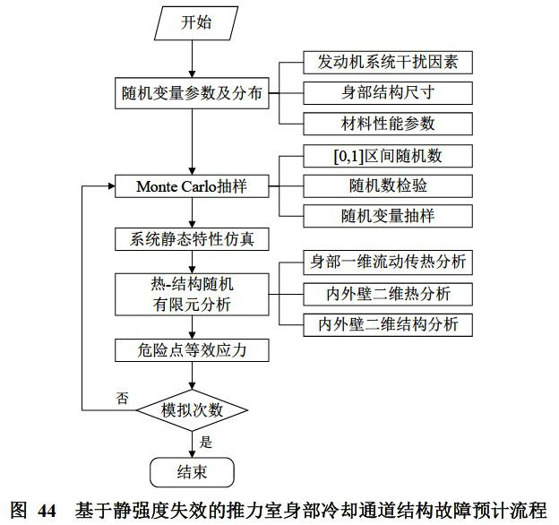
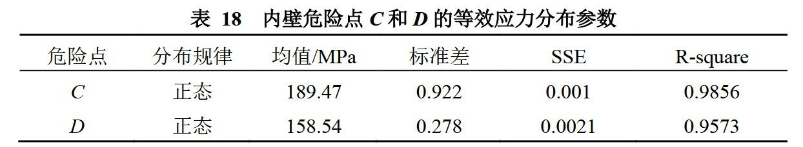
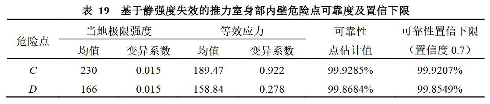
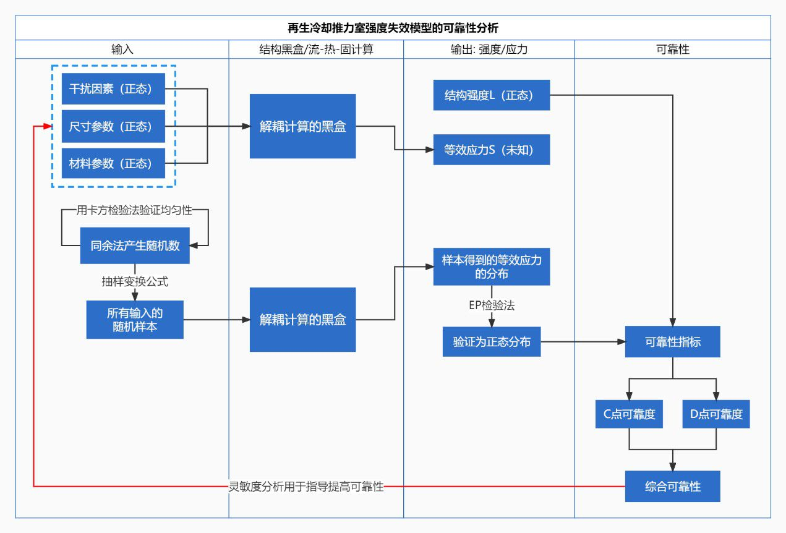

液体火箭发动机结构可靠性仿真及评估方法
[1] 张晟，液体火箭发动机结构可靠性仿真及评估方法[D]，北京航空航天大学，2018.
原文链接: 无
总思路
液体火箭发动机在航天运载器中故障多发，其能否可靠工作是航天运载发射任务能否成功的关键。液体火箭发动机的可靠性评估指标可以分为结构可靠性、性能可靠性和贮存可靠性，而结构可靠性的要求是最高的，对其进行评估也是最受重视的。

第二章
考虑强度、寿命、应力等的随机分布来评估结构可靠性是第二章一直贯彻的思想。例如在处理应力强度时，传统安全系数法不考虑结构强度、应力的分散性和随机性，对于图7中三个子图会给出相同的安全系数，但它们实际的可靠性的情况是不尽相同的。
传统方法无法识别这一差异，因此在实际使用中只是一味地采用较高的安全系数来保证高可靠性，这会使结构重量较大造成浪费。换言之，传统方法其实不能准确地回答可靠性到底是多少的问题，而本章的理论解决了这一点。

总的来说，第二章把失效物理模型成功转化成了可靠性模型，为后续可靠性仿真试验研究提供了评估及计算依据。

第三章
第三章是推力室身部再生冷却通道结构可靠性仿真试验。本文选取的研究对象为某型氢氧燃气发生器循环发动机，内壁为锆无氧铜 CuZr0.15，外壁为奥氏体锈钢 1Cr18Ni9Ti，比热、热导率、模量、强度等特征都是关于温度的函数；本构模型上采用双线性强化弹塑性模型和畸变能屈服准则，并且考虑了流动准则与硬化准则。
更重要的是，根据氢氧燃气发生器循环发动机系统组成，建立各流路的压力平衡、流量平衡和功率平衡方程，得到由68个方程组成的非线性稳态特性数学模型，用矢量形式可表示为：
式中为干扰因素组成的矢量，为稳态参数组成的矢量。对于给定的干扰因素，采用拟牛顿法对上述非线性方程组进行求解，得到稳态参数。
采用描述抽样方法，产生10000组满足正态分布的发动机干扰因素随机参数，利用蒙特卡罗仿真原理，通过求解非线性发动机静态特性方程，得到一定干扰因素下的推力室身部稳态载荷输入参数的分布规律。通过引入和方差SSE、均方根RMSE、测定系数SSR等拟合优度评价指标来确定了分布类型，根据拟合公式最后得到压力、混合比等7种载荷分布均服从正态分布。
3.2节中进行的再生冷却仿真的原理与之前课题组内“祖传代码”的思想基本一致，流程如图32所示。前几周时已经基本了解了全过程的原理，能够使用、修改、调试那套代码来计算寿命。

由冷却通道危险截面热结构分析可知，在试车阶段，内壁C点等效应力最大，D点温度最高，虽然内壁等效应力峰值出现在预冷阶段，但与试车阶段相比，仍有较大的安全裕度，因此将C和D点列为危险点，将试车阶段时C和D点的应力状态作为推力室冷却通道的危险状态。
通常推力室身部冷却通道等效应力的计算都是在确定性参数下进行的，但在发动机在实际工作过程中，会受到各种不确定因素的作用，导致等效应力波动，影响冷却通道的结构可靠性。考虑到发动机干扰因素、推力室身部结构尺寸及内外壁材料属性的随机性，将随机变量分为三类，一是影响推力室载荷输入参数的发动机随机干扰因素，包括泵前压力、环境压力、涡轮泵的效率、推力室燃烧效率、管路的流阻系数等；二是推力室加工过程中的尺寸偏差，包括冷却通道结构尺寸偏差、推力室内型面尺寸偏差等；三是内外壁材料性能参数的分散性，包括密度、比热容、弹性模量、热导率等。

使用发动机非线性稳态特性数学模型计算危险点C、D的系统干扰因素，将各尺寸参数视为具有公差范围的相互独立的符合正态分布的随机变量，材料性能参数随机变量同理，最后用蒙特卡洛方法验证危险点的分布情况，也符合正态分布。最后所谓“基于SSI模型和静强度模型的危险点可靠性分析”其实就是引入了一个可靠性指标β用于评估。


升华
无论是再生冷却强度失效模型还是疲劳寿命预估模型，都可以把流-热-固计算的部分视作一个“黑盒”，真正重要的部分是考虑这个黑盒的输入输出，确定分布规律，从而作可靠性分析。
以强度失效为例，下页中的泳道图梳理了从输入参数到计算可靠性的全过程。应力强度计算的部分，是和第二章的应力强度模型对应的，右下角从两点的可靠性得到综合可靠性的部分，和第二章中的最弱环模型相对应。通过仿真实验和灵敏度分析，最终能明确影响可靠性的主要因素，为提高可靠性指出了明确方向。

在液体火箭发动机传统可靠性评估中，为了验证某项可靠性指标，往往需要大量试车，但由于受研制成本、周期的限制，液体火箭发动机试车次数通常是有限的，因此如何在小子样条件下完成可靠性指标的高效准确评估是可靠性领域研究的难点和热点。因此第五章最核心的工作就是完成了基于可信度的的先验信息加权融合和基于Bayes理论的后验分布求取，形成了基于多源信息融合的发动机结构可靠性评估方法。在本文中液体火箭发动机的案例中，这种信息融合的Bayes可靠性评估方法可以至少减少34.4%的试验次数。